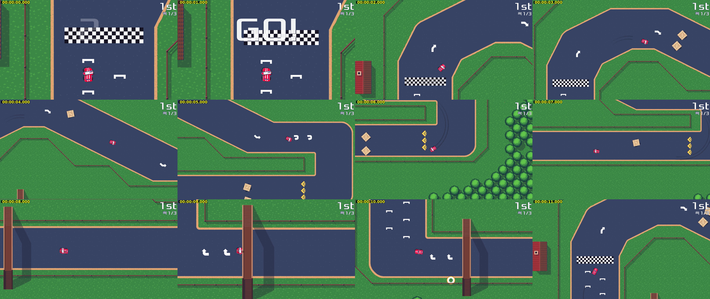
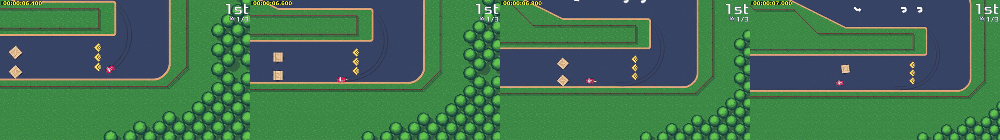
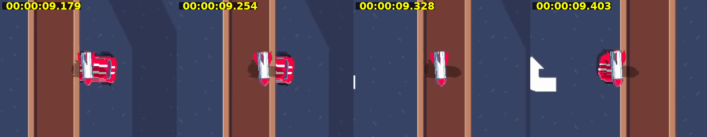
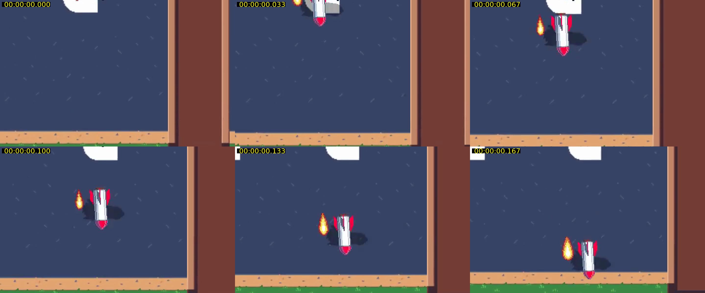

Eval: agateau__pixelwheels_362_mm
One dimension fails: Hardening – Difficulty (dim 16, [Fail - Trial Threshold Not Met]). With 7 trials (Option A), exactly 1 of 4 with-image runs must pass, and 2 do (htQZYKR and JuggtaW, 7/7). No-image is 0/3, as required. Dim 4, the Attempt5 failure, is fixed: 'or has carried' covers the fired rocket and 'its effects can be off too' covers its flame, so every defect falls under a named element. It scores 3 [Non-Fail - Image-carried Symptom], not 5, because the exact angle and flame defects are left to the clip. That is deliberate, and no with-image run took a defect for intended behavior. The other 17 dimensions score 5. Only instruction.md and task.toml changed since Attempt5. CB Oracle 1.0 and CB Nop 0.0 ran on the trial checksum 949c6191. Next step: re-run the trials on this unchanged bundle until Option A (exactly 1/4) or Option B (1-2/8) is met.
Scorecard
Every dimension in rubric order. Click a cell to see what is wrong (or the evidence, if it passed).
diff -rq); environment/, solution/, tests/ and the video are byte-identical. No file was added or removed. Extras: environment/bugs/bug_01..05.patch (applied and deleted in the same RUN) and README.md.NO-IMAGE TRIALS: /app/.harbor_assets was empty in all 3 ('total 8', only . and ..; by9Aj6n: 'there's no
recording.mp4 anywhere on the system'). All 3 scored 0.0: 6xwJHG6 f2p 5/7, GJ75mV3 4/7, by9Aj6n 4/7. All three fixed the z-order, both shadows and the camera from the text plus a code audit. All three failed carriedRocketPointsWhereTheCarPoints and firedRocketFliesWhereTheCarPoints with the nop values (rocket drawn at 278.8665°, flew towards 278.87335°), so the text alone still doesn't give a complete fix.The path resolves: the Dockerfile has
COPY assets/recording.mp4 /app/.harbor_assets/. Leak check: no repo, URL, file list, object or mechanism in instruction.md. The mechanism appears only in task.toml, which is blind (task_manifest.json blind list: tests/, solution/, task.toml).NAMING TABLE (file | role | what the frames show | what name/role/text claim | true? | agents confused?): recording.mp4 | bug_video | base behavior with bugs 01-05 injected. 0-1.2 s countdown: rocket crosswise on a north-facing car, car shadow up-left (sheet_2). 6.6-7.0 s: the car's own boost flame comes out of its back (sheet_3). 8 s: car at the left edge heading west (sheet_1). 9.18-9.40 s: car hidden under the footbridge while the rocket and a flat rocket shadow are drawn over it (sheet_4b). 9.80-10.2 s: rocket fired, heading down into the fence while the car heads west, flame beside the rocket's body from 9.87 s (sheet_6), explosion at the fence at about 10.05 s (sheet_5) | neutral name; role 'bug_video'; the ASSET_MANIFEST and evidence_bundle descriptions; the Attempt7 text (a carried or once-carried thing drawn or hidden wrongly compared with the vehicle, showing through what covers the vehicle, its effects off; shadows that don't fall or turn like the others; a view that shows more road behind; the same kind of thing drawn correctly elsewhere in the clip) | true: each claim matches a frame listed here | no: all 4 with-image runs read recording.mp4 as the bug recording, and none treated a defect as the reference.
F2P vs ASSET: missileIsDrawnBeforeForegroundLayer ↔ rocket over the bridge (sheet_4b). carriedRocketPointsWhereTheCarPoints ↔ crosswise rocket (sheet_2, sheet_4b). firedRocketFliesWhereTheCarPoints ↔ rocket flying down into the fence (sheet_5, sheet_6). rocketExhaustComesOutOfItsTail ↔ side flame (sheet_6). rocketShadowHasTheRocketsOrientation ↔ flat rocket shadow (sheet_4b). vehicleShadowFallsLikeEveryOtherShadow ↔ car shadow up-left (sheet_2). viewLooksAheadOfTheCarWhicheverWayItHeads ↔ road behind the car on the east/west straights (sheet_1). Fixing what the clip shows passes the f2p: htQZYKR and JuggtaW fixed all six from the clip and scored 7/7. STEP 7: a fix that skips any injected defect leaves it visible in the clip, so it is incomplete, not a valid alternative.
recording.mp4 and /app/.harbor_assets/recording.mp4. Dockerfile: COPY assets/recording.mp4 /app/.harbor_assets/. Every with-image trial lists .harbor_assets/recording.mp4 (4717379 B) in its submission-skipped.txt, so the file was at that path in each run.diff --git paths in fix.patch equal files_edited exactly (set compare = True): ZLevel.java, bonus/Missile.java, racer/VehicleRenderer.java, racescreen/GameRenderer.java, racescreen/Helicopter.java, racescreen/RacerCameraUpdater.java, racescreen/debug/DropLocationDebugObject.java and utils/BodyRegionDrawer.java, all under core/src. No test, doc, lockfile or changeset path.set(refH, 0).rotateRad; the radDeg shadow angle; the shadow sign flip; and the look-ahead built along the heading.NEW TRIAL EVIDENCE: htQZYKR and JuggtaW both passed 7/7 with alternatives, not the golden. Each drew the carried missile at its vehicle's level with no ZLevel restructure. Each tinted it with
mShooter.getVehicleRenderer().getBatchColor(), the Mine-style tint that NPE'd under the Attempt4 tests (JuggtaW tints whenever it is carried). Each set the angle from normalizeAnglePiRad(vehicle.getBody().getAngle()) and moved the exhaust with mReactorPos.set(refH, 0).rotateRad(angle).FAILURE CHECK: CoY6Azr fails only rocketExhaustComesOutOfItsTail ('it is -0.3500143 along the rocket axis'). That is the side position, since it never changed the exhaust code. v2GYjM3 and the no-image runs fail the angle f2p with the nop values (278.8665°, 278.87335°). Every failure is a real miss, not a harness rejection.
--tests Class.method and runs only those../gradlew --no-daemon --offline and installs nothing at test time.LOCAL: oracle 1.0 twice (identical) and nop 0.0 (0/7, 2/2) were run in the Attempt5 review on byte-identical environment/, solution/ and tests/. They were not repeated for Attempt7, because the only changed files (instruction.md, and task.toml's difficulty_explanation) feed neither the image nor the verifier.
Delivery gate
Process checks run locally or read from the submitted runs. Each failure is scored under the dimension it belongs to, not as an extra dimension.
Trials
3 no-image runs (pass@3, all must fail) and 4 with-image runs (pass@4, exactly 1 must pass). Rewards come from each run's verifier/reward.txt.
| Trial | Mode | Reward | f2p | p2p | Min | Failed tests |
|---|---|---|---|---|---|---|
task_without_images__6xwJHG6 | no-image | 0.0 | 5/7 | 2/2 | 3.2 | carriedRocketPointsWhereTheCarPoints firedRocketFliesWhereTheCarPoints |
task_without_images__GJ75mV3 | no-image | 0.0 | 4/7 | 2/2 | 3.1 | carriedRocketPointsWhereTheCarPoints firedRocketFliesWhereTheCarPoints rocketExhaustComesOutOfItsTail |
task_without_images__by9Aj6n | no-image | 0.0 | 4/7 | 2/2 | 3.2 | carriedRocketPointsWhereTheCarPoints firedRocketFliesWhereTheCarPoints rocketExhaustComesOutOfItsTail |
task_with_images__CoY6Azr | with-image | 0.0 | 6/7 | 2/2 | 4.1 | rocketExhaustComesOutOfItsTail |
task_with_images__htQZYKR | with-image | 1.0 | 7/7 | 2/2 | 4.0 | — |
task_with_images__JuggtaW | with-image | 1.0 | 7/7 | 2/2 | 3.6 | — |
task_with_images__v2GYjM3 | with-image | 0.0 | 5/7 | 2/2 | 3.2 | carriedRocketPointsWhereTheCarPoints firedRocketFliesWhereTheCarPoints |
Issues & suggested fixes
Hardening – Difficulty (Model Trial Fails) 2 · [Fail - Trial Threshold Not Met]
What is wrong. 2 of 4 with-image runs pass; Option A allows exactly 1. The dim 4 fix is the likely cause: 'its effects' makes the flame easier to find (3 of 4 with-image runs found it, plus 1 no-image run), so the rocket's angle is now the only thing that separates runs. With-image passes by attempt: A2 0/4, A3 2/4, A4 1/4, A5 1/4, A7 2/4.
Suggested fix. Keep the bundle as it is (dim 4 is now a non-fail) and re-run the trials on this checksum until one option is met: Option A, exactly 1 of 4 with-image passes; or Option B, 3 no-image + 8 with-image with 1-2 passes. At the Attempt2-7 with-image pass rate (6 of 20, about 1 in 3), each option lands about 40% of the time. If this wording passes closer to 1 in 2 (as this run did), Option A drops to about 25% and Option B to about 14%, so Option A is the better bet, and it is cheaper. Don't weaken the text to cut passes: that pushes dim 4 back toward a fail. Any change to instruction.md is a new checksum, which means re-running Oracle, Nop and every trial.
Instruction – Symptom Specificity 3 · [Non-Fail - Image-carried Symptom]
What is wrong. Not a fail. Flag [Non-Fail - Image-carried Symptom]: for the rocket's angle (carried and fired) and its flame, the text names the element and the kind of problem, and the exact defect is only in the clip. That trade-off is deliberate here: the hidden part is what keeps no-image runs from passing.
Suggested fix. No change needed: 3 is a non-fail. Don't try for a 5. Moving rows 2 and 3 into the text ('how it is turned', 'where its flame comes out') would hand no-image runs the angle and the flame. 'its effects' already lets 1 of 3 no-image runs fix the flame. If you re-word for any other reason, keep 'or has carried' and 'its effects' (they are what fixed the Attempt5 fail), add no direction words, and keep task.toml difficulty_explanation in sync. Any instruction.md change changes the checksum, so every trial must be re-run.
Dimension details
1. Structure – Task Bundle Files 5 · Pass
| Evidence | Attempt7/Tasks/agateau__pixelwheels_362_mm has all 11 fixed files, none empty: task.toml 6873 B, instruction.md 1066 B, evidence_bundle.json 1859 B, environment/Dockerfile 3063 B, environment/assets/ASSET_MANIFEST.json 605 B, solution/fix.patch 8587 B, solution/solve.sh 349 B, tests/config.json 1450 B, tests/test.patch 59677 B, tests/test.sh 11141 B, tests/verifier.py 8482 B. All three JSON files parse, task.toml parses, and tests/verifier.py passes py_compile. recording.mp4 (4717379 B, sha256 976eac49...ce179) is byte-identical to Attempt3-5 (1920x1080, 30 fps, 345 frames, 11.5 s). Attempt7 changes only instruction.md and task.toml (difficulty_explanation text) against Attempt5 (diff -rq); environment/, solution/, tests/ and the video are byte-identical. No file was added or removed. Extras: environment/bugs/bug_01..05.patch (applied and deleted in the same RUN) and README.md. |
|---|---|
| What is wrong | Nothing found. |
| Suggested fix | None. |
2. Structure – Deliverables & Packaging 5 · Pass
| Evidence | Attempt7 has sibling Tasks/ and Trials/ roots. Trials/without_images holds 3 runs (6xwJHG6, GJ75mV3, by9Aj6n) and Trials/with_images holds 4 (CoY6Azr, htQZYKR, JuggtaW, v2GYjM3): 7 trials, the Option A count. Oracle/ (XeLihPU), Nop/ (ifTRyKH), Check/ and Analyze/ are present, all run on the Attempt7 files. |
|---|---|
| What is wrong | Nothing found. The folders are extracted here, so they still have to ship as Tasks.tar.gz and Trials.tar.gz with top-level folders Tasks/ and Trials/. |
| Suggested fix | When you submit, tar each root on its own (tar czf Tasks.tar.gz Tasks; tar czf Trials.tar.gz Trials). |
3. Instruction – Requires Visual Evidence 5 · Pass
| Evidence | Read without the video, the text states the z-order symptom ('it can show through something that covers the vehicle, instead of being hidden with it'), the shadow symptom ('don't fall or turn like the others in the clip') and the camera symptom ('shows more of the road behind the vehicle it follows than ahead of it'). It adds two general cues: 'or has carried' and 'its effects can be off too'. It names no object, direction, timestamp, file, repo or mechanism. NO-IMAGE TRIALS: /app/.harbor_assets was empty in all 3 ('total 8', only . and ..; by9Aj6n: 'there's no recording.mp4 anywhere on the system'). All 3 scored 0.0: 6xwJHG6 f2p 5/7, GJ75mV3 4/7, by9Aj6n 4/7. All three fixed the z-order, both shadows and the camera from the text plus a code audit. All three failed carriedRocketPointsWhereTheCarPoints and firedRocketFliesWhereTheCarPoints with the nop values (rocket drawn at 278.8665°, flew towards 278.87335°), so the text alone still doesn't give a complete fix.The path resolves: the Dockerfile has COPY assets/recording.mp4 /app/.harbor_assets/. Leak check: no repo, URL, file list, object or mechanism in instruction.md. The mechanism appears only in task.toml, which is blind (task_manifest.json blind list: tests/, solution/, task.toml). |
|---|---|
| What is wrong | Nothing found. Non-graded, and the main risk of the new wording: 'its effects can be off too' let no-image run 6xwJHG6 find the flame defect by code audit. Its summary: 'Fired missile's engine flame: it was drawn beside the missile instead of at its tail, because it was offset along the wrong axis. It now sits at the back, the same way a vehicle's turbo flame does.' It passed rocketExhaustComesOutOfItsTail. In Attempt5 no no-image run found it. The 0/3 no-image result now rests only on the rocket's angle (2 f2p), which none of the 6 no-image runs in Attempt5 and Attempt7 found without the video. |
| Suggested fix | None. Don't add direction words to the text ('turned', 'points', 'faces', 'behind'): that is the cue left between the no-image runs and a pass. |
4. Instruction – Symptom Specificity 3 · Non-Fail
[Non-Fail - Image-carried Symptom]
| Evidence | WHAT CHANGED vs Attempt5 (the only instruction edit): 'Some of what a vehicle carries is drawn or hidden wrongly compared with that vehicle (it can show through something that covers the vehicle, instead of being hidden with it)' became 'Some of what a vehicle carries, or has carried, is drawn or hidden wrongly compared with that vehicle (it can show through something that covers the vehicle, instead of being hidden with it, and its effects can be off too)'. The shadow, view and 'the same kind of thing is drawn correctly elsewhere in the same clip' sentences are unchanged. TABLE (element | defect: text or image? | expected: text or image? | comparison pointed to | clue left to image | described correctly?): 1. 'what a vehicle carries' (the rocket on the car), z-order | TEXT: 'can show through something that covers the vehicle' | TEXT: 'instead of being hidden with it' | in-clip: the car hidden by the footbridge | which object, what covers it, when (9.25-9.33 s) | yes (sheet_4b). 2. 'what a vehicle carries, or has carried' (the rocket while carried and once fired), angle | kind in TEXT ('drawn ... wrongly compared with that vehicle'); the exact defect only in the IMAGE (crosswise on the car at 0-1.2 s and 9.2-9.5 s; flies down into the fence while the car heads west, 9.85-10.05 s) | IMAGE: 'compared with that vehicle' plus 'the same kind of thing is drawn correctly elsewhere in the same clip' (the car itself faces and travels along its heading) | in-clip | which object, which way, how far, when | yes (sheet_2, sheet_4b, sheet_6). This was Attempt5's row 1b (fired rocket not named); 'or has carried' now covers it. 3. 'its effects' (the fired rocket's flame) | kind in TEXT ('can be off'); the exact defect only in the IMAGE (flame beside the body, not behind the tail, from 9.87 s) | IMAGE: the car's own boost flame comes out of its back at 6.6-7.0 s, 'the same kind of thing ... drawn correctly elsewhere in the same clip' | in-clip | which object, which effect, which way it is off, when | yes (sheet_6 vs sheet_3). This was Attempt5's row 1c (no element named); 'its effects' now names it. 4. 'some shadows' | TEXT: 'don't fall or turn like the others' | TEXT + IMAGE: like the others in the clip | in-clip | which shadows (car shadow up-left; rocket and crate shadows that don't turn) | yes (sheet_2, sheet_4b). 5. 'the race view' | TEXT: 'sometimes shows more of the road behind the vehicle it follows than ahead of it' | TEXT by implication: more of the road ahead | not needed | which stretches (east/west straights; car at the left edge heading west at 8 s) | yes (sheet_1). THE THREE CHECKS: (1) Every tested defect now falls under a named element: the thing a vehicle carries or has carried, its effects, shadows, the race view. None hints at the fix. (2) Every general phrase ('drawn ... wrongly', 'can be off') comes with its context right away: whose (what a vehicle carries or has carried), compared with what (that vehicle), and where the correct look is (the same kind of thing elsewhere in the same clip). (3) The clues (rocket, footbridge, launch, direction, which side the flame is on, timestamps) stay in the clip. Attempt5's fail reason (two defects with no element named) is gone. WHY 3 AND NOT 5: for rows 2 and 3 the text gives only the kind of problem ('drawn wrongly compared with that vehicle', 'off'), and the exact defect (which way the rocket is turned, which side its flame is on) is left to the in-clip comparison. That is the rubric's image-carried pattern. Stating it would give the clue away: Attempt1's 'face the same way' / 'trails out behind it' let all 3 no-image runs pass. TRAJECTORIES (all 4 with-image runs read in full): all 4 fixed the rocket drawn over the footbridge, both shadows and the camera. - htQZYKR (1.0): 'Missile points the wrong way ... the carried missile sat across the car at an odd angle, and ... the fired missile (around 9.8 s) flew off down and away from the car's heading' and 'Reactor flame misplaced: the flame was attached to the missile's side instead of its tail'. - JuggtaW (1.0): 'Angle: it sat crosswise on the car' and 'Flame: after firing, the rocket flame came out of the missile's side. It now comes out of the back.' - CoY6Azr (0.0, 6/7): fixed the angle ('Missile sideways on the car: the missile sat at 90° to the car') but missed the flame. Its only close-ups were 8.9-9.5 s at the footbridge and 10.3-11.3 s, after the explosion, so it never sampled the 9.85-10.05 s launch (a sampling miss). - v2GYjM3 (0.0, 5/7): fixed the flame (step 18: 'the missile's exhaust flame off to the side of the missile instead of at its tail') but never mentioned the rocket's angle. A grep of all 4 runs for 'intended', 'by design', 'not a bug', 'looks fine/right/correct/normal', 'as expected' and 'not visible' finds only v2GYjM3's 'The other bonus renderers (gun, turbo, bullet) look correct', which is about other objects. No run took a defect for intended behavior. In Attempt5, 3 of 4 runs never looked at the rocket's angle or flame. In Attempt7 every run found at least one of them, and 2 found both. Analyze agrees: task_specification = pass for all 4 with-image trials. |
|---|---|
| What is wrong | Not a fail. Flag [Non-Fail - Image-carried Symptom]: for the rocket's angle (carried and fired) and its flame, the text names the element and the kind of problem, and the exact defect is only in the clip. That trade-off is deliberate here: the hidden part is what keeps no-image runs from passing. |
| Suggested fix | No change needed: 3 is a non-fail. Don't try for a 5. Moving rows 2 and 3 into the text ('how it is turned', 'where its flame comes out') would hand no-image runs the angle and the flame. 'its effects' already lets 1 of 3 no-image runs fix the flame. If you re-word for any other reason, keep 'or has carried' and 'its effects' (they are what fixed the Attempt5 fail), add no direction words, and keep task.toml difficulty_explanation in sync. Any instruction.md change changes the checksum, so every trial must be re-run. |
5. Instruction – Task Type 5 · Pass
| Evidence | task_type = temporal_interaction: 'Fix a defect that only appears across a sequence of interactions / state transitions'. The Attempt7 additions are state transitions in the clip: 'or has carried' is the carried-to-fired change, and 'its effects' is the flame, which exists only after launch. The rocket shows over the footbridge only while the car passes under it (9.25-9.33 s). The fired rocket's path and flame appear only after launch (9.85-10.05 s). The look-ahead error depends on the heading as the lap goes on (east/west vs north/south stretches). The text describes drawing and view problems over a recorded race, which fits the type. |
|---|---|
| What is wrong | Nothing found. Two of the six defects (the crosswise rocket and the car shadow) are visible in a single frame. That is fine, since the task as a whole needs the sequence. |
| Suggested fix | None. |
6. Image – Evidence Quality 5 · Pass
| Evidence | The asset is byte-identical to Attempt3-5 (sha256 976eac49...ce179, 4717379 B), so the frame analysis carries over. The launch close-up (sheet_6) and the boost sheet (sheet_3) were re-read for the two new claims. NAMING TABLE (file | role | what the frames show | what name/role/text claim | true? | agents confused?): recording.mp4 | bug_video | base behavior with bugs 01-05 injected. 0-1.2 s countdown: rocket crosswise on a north-facing car, car shadow up-left (sheet_2). 6.6-7.0 s: the car's own boost flame comes out of its back (sheet_3). 8 s: car at the left edge heading west (sheet_1). 9.18-9.40 s: car hidden under the footbridge while the rocket and a flat rocket shadow are drawn over it (sheet_4b). 9.80-10.2 s: rocket fired, heading down into the fence while the car heads west, flame beside the rocket's body from 9.87 s (sheet_6), explosion at the fence at about 10.05 s (sheet_5) | neutral name; role 'bug_video'; the ASSET_MANIFEST and evidence_bundle descriptions; the Attempt7 text (a carried or once-carried thing drawn or hidden wrongly compared with the vehicle, showing through what covers the vehicle, its effects off; shadows that don't fall or turn like the others; a view that shows more road behind; the same kind of thing drawn correctly elsewhere in the clip) | true: each claim matches a frame listed here | no: all 4 with-image runs read recording.mp4 as the bug recording, and none treated a defect as the reference. F2P vs ASSET: missileIsDrawnBeforeForegroundLayer ↔ rocket over the bridge (sheet_4b). carriedRocketPointsWhereTheCarPoints ↔ crosswise rocket (sheet_2, sheet_4b). firedRocketFliesWhereTheCarPoints ↔ rocket flying down into the fence (sheet_5, sheet_6). rocketExhaustComesOutOfItsTail ↔ side flame (sheet_6). rocketShadowHasTheRocketsOrientation ↔ flat rocket shadow (sheet_4b). vehicleShadowFallsLikeEveryOtherShadow ↔ car shadow up-left (sheet_2). viewLooksAheadOfTheCarWhicheverWayItHeads ↔ road behind the car on the east/west straights (sheet_1). Fixing what the clip shows passes the f2p: htQZYKR and JuggtaW fixed all six from the clip and scored 7/7. STEP 7: a fix that skips any injected defect leaves it visible in the clip, so it is incomplete, not a valid alternative. |
|---|---|
| What is wrong | Nothing found. |
| Suggested fix | None. |
7. Metadata – task_type 5 · Pass
| Evidence | task_type = "temporal_interaction" is one of the seven values and fits a video whose defects appear across state transitions (see dim 5). tags: "multimodal", "2d_video", "temporal_interaction", "beyond_browser". Unchanged since Attempt5. |
|---|---|
| What is wrong | Nothing found. |
| Suggested fix | None. |
8. Evidence – Chain Consistency 5 · Pass
| Evidence | On disk: environment/assets/recording.mp4, 4717379 B, sha256 976eac49ad8af73175bc20545e8f19c520f7691ceb150e437ab192f95edce179. ASSET_MANIFEST.json: file recording.mp4, container_path /app/.harbor_assets/recording.mp4, same bytes and sha256. evidence_bundle.json: local_path /app/.harbor_assets/recording.mp4, same bytes and sha256. instruction.md refs: recording.mp4 and /app/.harbor_assets/recording.mp4. Dockerfile: COPY assets/recording.mp4 /app/.harbor_assets/. Every with-image trial lists .harbor_assets/recording.mp4 (4717379 B) in its submission-skipped.txt, so the file was at that path in each run. |
|---|---|
| What is wrong | Nothing found. |
| Suggested fix | None. |
9. Golden Fix – Applies Cleanly 5 · Pass
| Evidence | fix.patch is byte-identical to Attempt5 (8587 B, 8 files), and so are the Dockerfile, bugs/ and the asset. The CB Oracle XeLihPU logs '== captured submission.patch (8587 bytes, 8 files) ==' and reward=1.0. In the Attempt5 review the same patch applied at harbor_base (HEAD 2f1ec51) in the local oracle twice (1.0 both times). Not re-run locally for Attempt7: instruction.md is not copied into the image, and task.toml changed only in difficulty_explanation. |
|---|---|
| What is wrong | Nothing found. |
| Suggested fix | None. |
10. Golden Fix – Source-Only Scope 5 · Pass
| Evidence | The 8 diff --git paths in fix.patch equal files_edited exactly (set compare = True): ZLevel.java, bonus/Missile.java, racer/VehicleRenderer.java, racescreen/GameRenderer.java, racescreen/Helicopter.java, racescreen/RacerCameraUpdater.java, racescreen/debug/DropLocationDebugObject.java and utils/BodyRegionDrawer.java, all under core/src. No test, doc, lockfile or changeset path. |
|---|---|
| What is wrong | Nothing found. |
| Suggested fix | None. |
11. Tests – Implementation Overfit 5 · Pass
| Evidence | tests/ is byte-identical to Attempt5, where the equivalence table was built and checked locally. These were all accepted: the golden ZLevel split; the carried missile drawn at its vehicle's level; the Mine-style tint (local alt_tint 1.0); the angle from getBody().getAngle() or referenceAngle = 0; the exhaust via cos/sin or set(refH, 0).rotateRad; the radDeg shadow angle; the shadow sign flip; and the look-ahead built along the heading.NEW TRIAL EVIDENCE: htQZYKR and JuggtaW both passed 7/7 with alternatives, not the golden. Each drew the carried missile at its vehicle's level with no ZLevel restructure. Each tinted it with mShooter.getVehicleRenderer().getBatchColor(), the Mine-style tint that NPE'd under the Attempt4 tests (JuggtaW tints whenever it is carried). Each set the angle from normalizeAnglePiRad(vehicle.getBody().getAngle()) and moved the exhaust with mReactorPos.set(refH, 0).rotateRad(angle).FAILURE CHECK: CoY6Azr fails only rocketExhaustComesOutOfItsTail ('it is -0.3500143 along the rocket axis'). That is the side position, since it never changed the exhaust code. v2GYjM3 and the no-image runs fail the angle f2p with the nop values (278.8665°, 278.87335°). Every failure is a real miss, not a harness rejection. |
|---|---|
| What is wrong | Nothing found. |
| Suggested fix | None. |
12. Tests – f2p/p2p Identifier Validity 5 · Pass
| Evidence | The task.toml f2p/p2p lists equal tests/config.json exactly (compare = True for both). Each of the 9 IDs matches exactly one testcase (count = 1) in all 9 Attempt7 CB JUnit reports (Oracle, Nop, 7 trials), with no extra testcases. test.sh turns each ID into --tests Class.method and runs only those. |
|---|---|
| What is wrong | Nothing found. Non-graded, carried over: test.patch adds MissileZOrderTest.liftedVehicleIsDrawnAfterForegroundLayer (test.patch line 577), which is in neither list and never runs. |
| Suggested fix | Optional, only if something else forces a re-run: add it to p2p after checking it passes on nop and oracle, or drop it from test.patch. |
13. Tests – p2p Classification 5 · Pass
| Evidence | helicopterIsDrawnAfterForegroundLayer and viewKeepsTheCarOnScreen pass on CB Nop ifTRyKH (2/2) and CB Oracle XeLihPU (2/2), and in all 7 Attempt7 trials. Local nop and oracle on the byte-identical tests (Attempt5 review) also give 2/2. |
|---|---|
| What is wrong | Nothing found. |
| Suggested fix | None. |
14. Tests – Discriminating (f2p) 5 · Pass
| Evidence | All 7 f2p fail on CB Nop ifTRyKH (0/7) and pass on CB Oracle XeLihPU (7/7). The nop messages are behavioral and unchanged: 'the rocket it carries is drawn pointing 278.8665°', 'the fired rocket flew towards 278.87335°', 'the exhaust should be behind the rocket's tail, it is -0.34986708 along the rocket axis', the rocket-shadow angle, the view shift towards 180.0°, the car-shadow offset and the draw-before-foreground check. Each f2p maps to one injected or upstream defect. |
|---|---|
| What is wrong | Nothing found. |
| Suggested fix | None. |
15. Tests – Determinism 5 · Pass
| Evidence | The tests and harness are unchanged. The Attempt7 CB Oracle gives 7/7, 2/2 again, matching the Attempt5 CB oracle and the local oracle and re-run (identical). The failing values are identical across CB Nop, the no-image runs and the failing trials (278.8665°, 278.87335°, -0.34986708). Box2D steps at a fixed time step, textures are mocks, and the GL tests run in software GL under Xvfb. Nothing uses the network or wall-clock time. test.sh runs ./gradlew --no-daemon --offline and installs nothing at test time. |
|---|---|
| What is wrong | Nothing found. Non-graded, carried over: [verifier] network_mode = "public" is more than the offline run needs (harmless); test.sh still has the template's wx comment block and an undefined REPORTS array (harmless). |
| Suggested fix | Optional, only together with another change that forces a re-run: network_mode = "no-network" and remove the wx comment block. |
16. Hardening – Difficulty (Model Trial Fails) 2 · Fail
[Fail - Trial Threshold Not Met]
| Evidence | Option A (7 trials: 3 no-image + 4 with-image). NO-IMAGE 0/3, as required: 6xwJHG6 0.0 (f2p 5/7), GJ75mV3 0.0 (4/7), by9Aj6n 0.0 (4/7). /app/.harbor_assets was empty in each, and they ran on the stripped-variant checksum 9d2de01e. WITH-IMAGE 2/4: htQZYKR 1.0 (7/7, 2/2) and JuggtaW 1.0 (7/7, 2/2) pass. CoY6Azr 0.0 (6/7, missed the flame) and v2GYjM3 0.0 (5/7, missed both angle f2p) fail. All 4 with-image runs used checksum 949c6191, the same as Oracle and Nop, and the bundle matches all 17 sha256 entries in Trials/with_images/task_manifest.json. Rewards were read from verifier/reward.txt. Trial run times were 3.1-4.1 min each (informational). Option A needs exactly 1/4; the rubric lists 2/4 as a fail. Option B doesn't apply either, since it needs 8 with-image runs. Neither pass looks like recall of the public fix: both used the vehicle-level z-order, not the upstream ZLevel restructure. |
|---|---|
| What is wrong | 2 of 4 with-image runs pass; Option A allows exactly 1. The dim 4 fix is the likely cause: 'its effects' makes the flame easier to find (3 of 4 with-image runs found it, plus 1 no-image run), so the rocket's angle is now the only thing that separates runs. With-image passes by attempt: A2 0/4, A3 2/4, A4 1/4, A5 1/4, A7 2/4. |
| Suggested fix | Keep the bundle as it is (dim 4 is now a non-fail) and re-run the trials on this checksum until one option is met: Option A, exactly 1 of 4 with-image passes; or Option B, 3 no-image + 8 with-image with 1-2 passes. At the Attempt2-7 with-image pass rate (6 of 20, about 1 in 3), each option lands about 40% of the time. If this wording passes closer to 1 in 2 (as this run did), Option A drops to about 25% and Option B to about 14%, so Option A is the better bet, and it is cheaper. Don't weaken the text to cut passes: that pushes dim 4 back toward a fail. Any change to instruction.md is a new checksum, which means re-running Oracle, Nop and every trial. |
17. Hardening – Real & Feasible 5 · Pass
| Evidence | Defect 1 is upstream issue #362 (PR #373): the carried rocket is drawn over foreground map elements. Bugs 01-05 are plausible developer mistakes: a degrees/radians mix-up hidden behind normalizeAnglePiRad, a joint reference angle that keeps the wrong offset, a sprite axis swap for the exhaust, a radians-for-degrees mix-up in BodyRegionDrawer, a sign flip in the car shadow offset, and a +Y look-ahead rotated by (90 - heading). Each fix is a one- or two-line correction a real developer would write. Feasible: htQZYKR and JuggtaW solved all six from the video and the code in about 3 minutes of agent time. |
|---|---|
| What is wrong | Nothing found. Non-graded, carried over: task.toml difficulty_explanation still says 'spread over seven source files', while files_edited lists eight. |
| Suggested fix | Optional, only together with another change that forces a re-run: change 'seven' to 'eight'. |
18. Gate – Oracle/Nop 5 · Pass
| Evidence | CB Oracle XeLihPU logs '== captured submission.patch (8587 bytes, 8 files) ==', '== applying test.patch ==', '== running f2p + p2p tests ==', '== computing reward ==' and reward=1.0 (f2p 7/7, p2p 2/2, 0.6 min). CB Nop ifTRyKH captures 0 bytes, shows the same banners and gives reward=0.0 (f2p 0/7, p2p 2/2, 0.6 min). Neither log contains 'could not apply'. Both are on lock 949c6191, the checksum of the 4 with-image trials. LOCAL: oracle 1.0 twice (identical) and nop 0.0 (0/7, 2/2) were run in the Attempt5 review on byte-identical environment/, solution/ and tests/. They were not repeated for Attempt7, because the only changed files (instruction.md, and task.toml's difficulty_explanation) feed neither the image nor the verifier. |
|---|---|
| What is wrong | Nothing found. |
| Suggested fix | None. |
19. Unauditable 5 · Pass
| Evidence | The submission is complete and auditable: bundle, 7 trials with trajectories, Oracle, Nop, Check (all 11 checks pass or not_applicable) and Analyze (reward_hacking and task_specification pass for all 4 with-image trials). |
|---|---|
| What is wrong | Nothing found. |
| Suggested fix | None. |
Visual evidence






